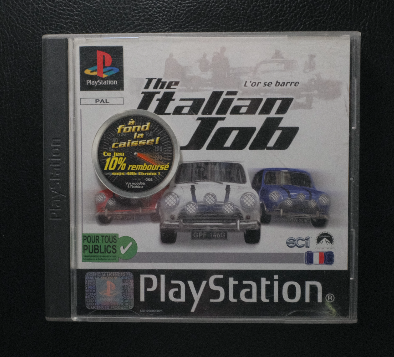
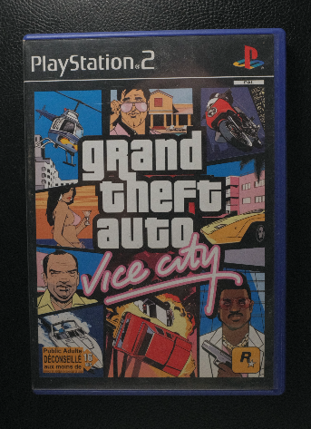

La création du site 4nuances est avant tout un outil de partage de nos créations. Ces dernières sont inspirées de jeux vidéo joués dans le passé, utilisant des stratégies ou des mécaniques de l'époque. Sur cette page, je vous explique les inspirations rétrogaming qui vont sans dire, notamment de la PlayStation première du nom et de la deuxième.

Avant tout, le côté scénario est aussi inspiré des livres lus et des films vus. Mais quand je parle de scénario et de mécaniques, je pense à Resident Evil II. Une histoire révolutionnaire à l'époque, digne d'un livre qu'on suivait chaque jour. Par rapport à Silent Hill et Alone in the Dark: The New Nightmare, il a mal vieilli. Il fait cartoon. Peut-être à cause de Raccoon City, une parodie de ville américaine qui fait vraiment faux et coupe le côté réaliste de l'épidémie d'Umbrella.
Pour le côté open world de la première génération, on aurait pu choisir Driver 2 ou les premiers GTA, mais non. Le premier sentiment de liberté au volant d'une voiture se fait ressentir dans les rues de Londres, puis de Turin, dans The Italian Job, inspiré du film du même titre en VO où l'or se barre en France. Graphiquement, il est magnifique pour l'époque, ce qui est rare pour un jeu adapté d'un film (je garde un très mauvais souvenir d'Astérix et Obélix).

La deuxième génération est celle des open worlds, avec l'arrivée de GTA en 3D. GTA a ajouté la cerise sur le gâteau, une ambiance qui peut être triste, désolée et pauvre dans GTA III, ou au contraire lumineuse, excentrique et vicieuse dans GTA Vice City. Rockstar Games s'est inspiré, à son tour, volontairement mais pas officiellement, de films ou de séries comme Miami Vice ou Scarface dans GTA Vice City, et Le Parrain dans GTA III.